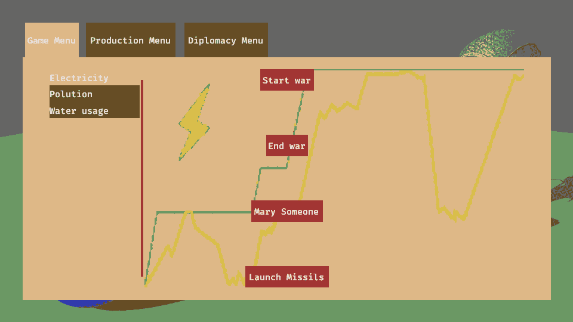
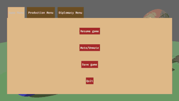
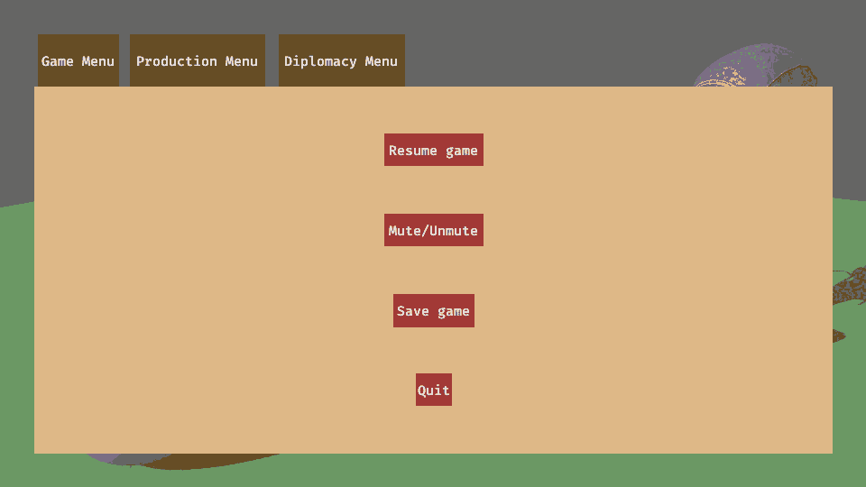
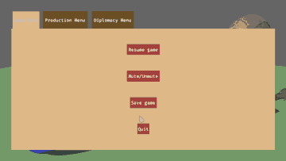

Scaling up with a custom DSL
cuicui_dsl and cuicui_chirp are parametrized over the DslBundle and
ParseDsl traits respectively.
You can directly use one of the DSLs exported by an external crate such as
UiDsl, LayoutDsl, NavigationDsl or SpriteDsl, but we recommend
that you define your own DSL on top of them.
This is how the chirpunk example works. We re-use pre-existing DSLs, but add our own layer on top, to create a unique vocabulary that applies to the specific game we build.
So let’s make a game.
Better Factorio
What better genre than factory-building to illustrate a game UI library? Let’s mix in some grand strategy for good measure. We’ll make Factorio×CrusaderKings fusion.
Our goal is to make:
- A menu with several tabs, tabs are:
- A “game” menu with buttons that represent game menu buttons, clicking on them prints a message
- A “production” menu (with static
pngas graph for now) - A “diplomacy” menu where we can start and end wars, marry someone, launch missiles
We will be able to swap menu by clicking buttons, and most game-specific actions will result in a message being logged into the terminal.
For more complex interaction patterns, read the next chapter.
A menu with tabs
So let’s make a menu.
First, we write the whole menu. To pretend it is a game menu, we draw a
background and then have the menu occupy a subset of the screen. We do that
by setting a 25 pixels margin on the Root entity.
The menu with tabs is a column menu, the first row is the tab line, the second the content:
Root(row screen_root margins(25, 25) image("background.jpg")) {
Menus(column rules(100%, 100%)) {Then, we fill up the rest.
The tab line:
Tabs(row rules(100%, 12.5%) distrib_start) {
tab!("Game Menu", 0, burlywood)
tab!("Production Menu", 1, #6b4d22)
tab!("Diplomacy Menu", 2, #6b4d22)
}(more on the tab! template later)
Menu(layout(">oCaC") rules(100%, 87.5%) marked(Tabs) bg(burlywood)) {
game_menu!()
production_menu!()(hidden)
diplomacy_menu!()(hidden)
}The content uses the overlapping layout distribution mode with layout(">oCaC")
(the o is the important bit, it stands for “overlapping”). This allows
each child of Menu to occupy the same space.
We now just have tab, game_menu, production_menu, and diplomacy_menu to
define. (more on those (hidden) later)

Hide the menus
We used template extras here to mark two of the Menu children as “hidden”.
game_menu!()
production_menu!()(hidden)
diplomacy_menu!()(hidden)Indeed, we don’t want all three menus to be visible at the same time. To this
end, we spawn the production and diplomacy menus with the Visibility component
set to Hidden.
But here is the hang up! Neither LayoutDsl or UiDsl have a hidden method,
how are we to set the Visibility component?
Answer: We write our own DSL.
Let’s start by creating a new module:
mod dsl;Then define a BetterFactorioDsl:
// `DslBundle` requires `Default`
#[derive(Default)]
pub struct BetterFactorioDsl {
inner: UiDsl,
is_hidden: bool,
}Let’s add the chirp loader for BetterFactorioDsl in our add_plugins:
cuicui_chirp::loader::Plugin::new::<BetterFactorioDsl>(),We need to implement ParseDsl and DslBundle on BetterFactorioDsl
for this to compile.
The parse_dsl_impl macro is how we implement ParseDsl.
We use the delegate meta-attribute, so that we can re-use the UiDsl and
LayoutDsl methods in our chirp file:
#[parse_dsl_impl(delegate = inner)]
impl BetterFactorioDsl {}
impl DslBundle for BetterFactorioDsl {
fn insert(&mut self, cmds: &mut EntityCommands) -> Entity {
self.inner.insert(cmds)
}
}It compiles now, but we are missing the hidden method:
Error: × No 'hidden' method
╭─[better_factorio/menu.chirp:65:1]
65 │ game_menu!()
66 │ production_menu!()(hidden)
67 │ diplomacy_menu!()(hidden)
· ^^^^^^
68 │ }
╰────
help: custom_dsl::dsl::BetterFactorioDsl doesn't contain a method with this name.
Let’s add it then! We already have a is_hidden field, we just have to
define a hidden method to set it:
impl BetterFactorioDsl {
fn hidden(&mut self) {
self.is_hidden = true;
}Now we can read the is_hidden field in the DslBundle::insert implementation:
self.inner.insert(cmds);
if self.is_hidden {
cmds.insert(Visibility::Hidden);
}Make sure to add it after the inner.insert(cmds). Visibility is part of the
NodeBundle that UiDsl adds to the entity. Adding it after the inner ensures
that we overwrite the Visibility component with the wanted value.
Game menu & interaction
Ok, so I included the game menu in all those screenshots, but didn’t define it yet. Sorry for the confusion.
The game menu was a template call, game_menu!(). Then, let’s define it.
fn game_menu() {
GameMenu(column rules(100%, 100%)) {
Entity(height(0%))
print_button!("Resume game")
print_button!("Mute/Unmute")
print_button!("Save game")
print_button!("Quit")
Entity(height(0%))
}
}print_button! is yet another template. It stands for a button we can click,
when clicking it, a message is displayed in the console.
fn print_button(button_text) {
Entity(print_text(button_text) highlight row rules(1.1*, 2*) named(button_text) bg(brown)) {
ButtonText(text(button_text))
}
}Notice that we called the print_text(button_text) and highlight methods in
print_button!.
highlightshould add a component that changes the color of the button when it’s being hoveredprint_textdoes print in the console the button text content.
Let’s add them to our BetterFactorioDsl.
Using bevy_mod_picking
We will use the bevy_mod_picking components for this.
We should use the On component from bevy_mod_picking. One issue with On
is that it is not Reflect, therefore, we cannot use it in our chirp file;
cuicui_chirp creates a scene then adds it to the bevy world, and this requires
all components from the scene to be Reflect.
cuicui_dsldoesn’t have this issue.
We can get around this limitation by creating a “mirror” component. Mirror
components are Reflect proxies that are synchronized with actual components.
We already define a MirrorPlugin in the cuicui_examples shared code.
I plan on extracting this into a standalone crate,
cuicui_mirror.
All we have left to do is to define a mirror component,
implement From<&ReflectOnClick> for On<Pointer<Click>>, and add MirrorPlugin.
use bevy::log::info;
use bevy::prelude::{Component, EventWriter, Reflect, ReflectComponent};
use bevy_mod_picking::prelude::{Click, On, Pointer};
use crate::dsl::{SwitchGraph, SwitchTab};
#[derive(Reflect, Default, Component)]
#[reflect(Component)]
pub enum ReflectOnClick {
LogInfo(String),
EmitSwitchTab(u8),
EmitSwitchGraph(u8),
#[default]
Invalid,
}
type OnClick = On<Pointer<Click>>;
impl<'a> From<&'a ReflectOnClick> for OnClick {
fn from(value: &'a ReflectOnClick) -> Self {
match value {
ReflectOnClick::LogInfo(text) => {
let text = text.clone();
Self::run(move || info!("{text}"))
}
&ReflectOnClick::EmitSwitchTab(index) => {
Self::run(move |mut ev: EventWriter<_>| ev.send(SwitchTab(index)))
}
&ReflectOnClick::EmitSwitchGraph(index) => {
Self::run(move |mut ev: EventWriter<_>| ev.send(SwitchGraph(index)))
}
ReflectOnClick::Invalid => unreachable!("Should never spawn an invalid ReflectOnClick"),
}
}
} bevy_mod_picking::DefaultPickingPlugins,
cuicui_examples::MirrorPlugin::<OnClick, ReflectOnClick>::new_from(),Now let’s amend BetterFactorioDsl to add the highlight and print_text methods:
#[derive(Default)]
pub struct BetterFactorioDsl {
inner: UiDsl,
is_hidden: bool,
+ is_highlight: bool,
+ text_to_print: Option<Box<str>>,
}
In the #[parse_dsl_impl] impl BetterFactorioDsl block:
fn print_text(&mut self, text: &str) {
self.text_to_print = Some(text.into());
}
fn highlight(&mut self) {
self.is_highlight = true;
}In DslBundle::insert for BetterFactorioDsl:
if let Some(text) = self.text_to_print.take() {
cmds.insert(ReflectOnClick::LogInfo(text.into()));
}
if self.is_highlight {
cmds.insert(Highlight::new(Color::BEIGE));
}I’ll skip over Highlight here, you can see the implementation for yourself.
Similarly to ReflectOnClick, we use bevy_mod_picking to react to events, but
define it as a standalone Reflect component to be able to use it in a scene.

(not shown: the logs in the terminal)
The tab line
Now that only a single menu shows up at a time, we should have the ability to switch between them.
We should be able to click on a tab to swap between menu.
Let’s define our tab! template.
- We’ll use a darker tone color for unselected tabs,
#6b4d22. - We’ll give some space between each tab, to reproduce real world tabs (skeuomorphic design 🤓).
fn tab(menu_name) {
Entity(row rules(1.1*, 100%) named(menu_name)) {
TabSurface(highlight row rules(1.1*, 100%) bg(#6b4d22)) {
TabText(text(menu_name))
}
}
}
// ...
Tabs(row rules(100%, 12.5%) distrib_start) {
tab!("Game Menu")
tab!("Production Menu")
tab!("Diplomacy Menu")
}
It’s nice and all, but we need some interactivity. We also need the selected tab to have the same color as the game menu background.
We can’t use template extras in this case, because the root node of the tab
template is transparent, we need to pass the color as an additional argument
-fn tab(menu_name) {
+fn tab(menu_name, initial_color) {
Entity(row rules(1.1*, 100%) named(menu_name)) {
- TabSurface(highlight row rules(1.1*, 100%) bg(#6b4d22)) {
+ TabSurface(highlight row rules(1.1*, 100%) bg(initial_color)) {
TabText(text(menu_name))
}
Tabs(row rules(100%, 12.5%) distrib_start) {
- tab!("Game Menu")
- tab!("Production Menu")
- tab!("Diplomacy Menu")
+ tab!("Game Menu", burlywood)
+ tab!("Production Menu", #6b4d22)
+ tab!("Diplomacy Menu", #6b4d22)
Switching between tabs
Unlike the print_text buttons, here, we need to change which menu is visible
when the tab is pressed. So let’s create a new method: switch_tab and add it
to our template:
Entity(row rules(1.1*, 100%) named(menu_name)) {
- TabSurface(highlight row rules(1.1*, 100%) bg(#6b4d22)) {
+ TabSurface(highlight switch_tab(menu_index) row rules(1.1*, 100%) bg(initial_color)) {
TabText(text(menu_name))
}
Similarly to Highlight, I won’t expand on switch_tab. The
idea is to:
- Have a
TabButton(u8)component. Whenever an entity with this component is clicked, send aSwitchTabevent with theu8. - Mark the parent of all the three menus with a component,
Tabs. - Whenever we receive a
SwitchTab(u8)component, query for theTabsentity and its children, setVisibilityof all the children but theu8toVisibility::Hidden.
use Visibility::{Hidden, Inherited};
for req in tab_requests.read() {
let Ok(menu_children) = tab_menu.get_single() else {
continue;
};
let mut i = 0;
let mut iter = vis.iter_many_mut(menu_children);
while let Some(mut vis) = iter.fetch_next() {
*vis = if i == req.index() { Inherited } else { Hidden };
i += 1;
}
}See the implementation for details.
We need to use bevy_mod_picking for this as well, and this requires using a
mirror component. Conveniently, we already did it in a previous section.
#[derive(Default)]
pub struct BetterFactorioDsl {
inner: UiDsl,
is_hidden: bool,
is_highlight: bool,
text_to_print: Option<Box<str>>,
+ switch_tab: Option<u8>,
}
In the #[parse_dsl_impl] impl BetterFactorioDsl block:
fn switch_tab(&mut self, index: u8) {
self.switch_tab = Some(index);
}In DslBundle::insert for BetterFactorioDsl:
if let Some(index) = self.switch_tab {
cmds.insert((ReflectOnClick::EmitSwitchTab(index), TabButton(index)));
}Finally, we need to pass the menu index as parameter to the template:
fn tab(menu_name, menu_index, color) {
Entity(row rules(1.1*, 100%) named(menu_name)) {
TabSurface(highlight switch_tab(menu_index) row rules(1.1*, 100%) bg(color)) {
TabText(text(menu_name))
}
}
} Tabs(row rules(100%, 12.5%) distrib_start) {
tab!("Game Menu", 0, burlywood)
tab!("Production Menu", 1, #6b4d22)
tab!("Diplomacy Menu", 2, #6b4d22)
}
Diplomacy and Production
The diplomacy menu is very similar to the game menu, I won’t go over it, just get a look at the code:
fn diplomacy_menu() {
DiplomacyMenu(column rules(100%, 90%)) {
print_button!("Start war")
print_button!("End war")
print_button!("Marry Someone")
print_button!("Launch Missiles")
}
}The production menu is more interesting. Similarly to the root menu, we want several panels (production types: electricity, water, pollution) we can switch between, and buttons to select the panel.
We will use the same switch implementation that we used for tabs.
This time, we will name our method switch_graph. I won’t go over the rust
implementation, as it’s pretty much a copy/paste of the tabs switching code.
fn production_button(button_text) {
Entity(layout(">dSaC") named(button_text) rules(100%, 1.5*) bg(#6b4d22) highlight) {
Entity(text(button_text))
}
}
fn production_menu() {
ProductionMenu(row rules(100%, 90%) main_margin(30)) {
TypesColumn(layout("vdSaS") rules(19%, 100%)) {
production_button!(Electricity)(switch_graph(0) bg(burlywood))
production_button!(Water usage)(switch_graph(1))
production_button!(Polution)(switch_graph(2))
}
Entity(rules(0.5%, 90%) bg(brown))
TypesGraph(layout(">oCaC") rules(80%, 100%) marked(Graphs)) {
Electricity(image("better_factorio/elect_graph.png") width(100%))
WaterUsage(image("better_factorio/water_graph.png") hidden width(100%))
Polution(image("better_factorio/pollution_graph.png") hidden height(100%))
}
}
}